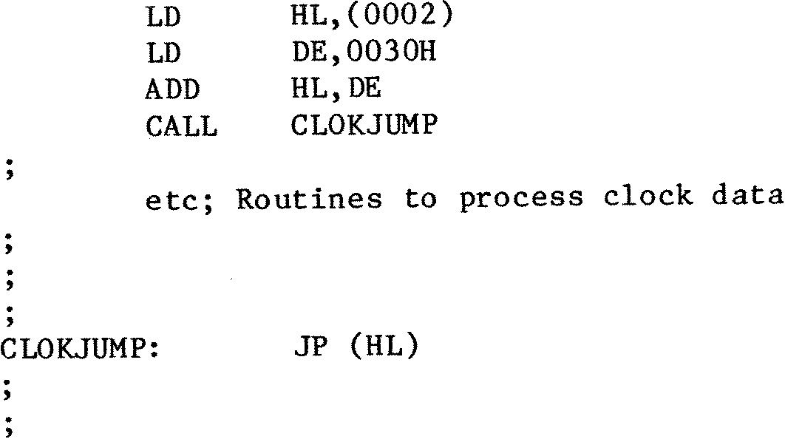

80-Bus News |
November–December 1984 · Volume 3 · Issue 6 |
| Page 48 of 55 |
|---|
The cursor is then restored to its original screen place using ‘SETCUR’, the original contents of CURSOR are ‘POP’ed off the stack and then restored, and then the cursor is then turned on again, using the appropriate IVC command.
Finally, ‘HL’ is loaded with the address of STRING, or STRNG1 as appropriate, so that if the clock read module was called from an external program, that program would be able to find the address of the clock data for subsequent use.
This completes the code needed to modify SYS Version 16. I am using ‘SYS’ modified as described while typing this article in with GEMPEN, and the display is showing the Day name, full date, and time, updating every second. There is no noticeable effect on the clock display during typing, even if the repeat keyboard feature is used. During formatting of this text, which is about 28K long, however, the display stops for about a minute and a half. The ‘freezing’ of the clock display can be made use of, to time activities such as formatting, disk I/O and assembly.
Locations 0002 and 0003 in memory hold the ‘WARM BOOT’ address, which is 3 bytes into the BIOS. The ‘JP READIT’ instruction is 30 bytes further on, and the marker is another 3 bytes on. For example, on my machine, locations 0002 and 0003 hold 0EE03H, so the ‘clock jump’ is at 0EE33H, and the marker “RTC” starts at 0EE36H. The clock can therefore be accessed by a CALL 0EE33H instruction. The clock access can be performed in a better way as follows :–
This will not be very easy, especially for persons unused to getting into CP/M with Disassemblers and Debuggers. I think that one feasible approach is to carry out the following steps.
| Page 48 of 55 |
|---|